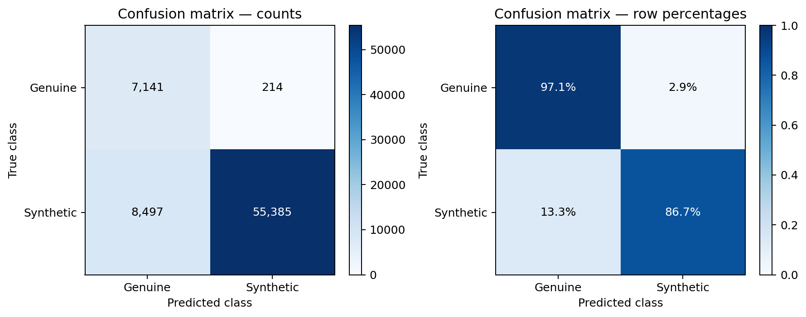
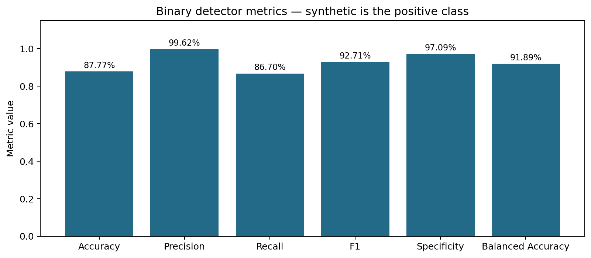

Counts-derived metrics; ROC-AUC, if present, is reported rather than recomputed.
Positive class: synthetic. Threshold: 0.5. Samples: 71,237.
{
"repository": "ASVspoof 2019 English experiment (user-reported run)",
"checkpoint": "models/english_20260907T044807696536Z/best.pt",
"best_epoch": 13,
"notice": "Historical test result, not evidence of real-world or MLAAD performance.",
"provenance": "Transcribed from the user's evaluation.json screenshot in this conversation. The assistant did not rerun this checkpoint or access the original prediction files. Charts generated from this record are aggregate-only."
}| Metric | Value |
|---|---|
| n | 71237 |
| accuracy | 0.877718 |
| precision | 0.996151 |
| recall | 0.866989 |
| f1 | 0.927093 |
| specificity | 0.970904 |
| false_positive_rate | 0.0290959 |
| false_negative_rate | 0.133011 |
| negative_predictive_value | 0.456644 |
| balanced_accuracy | 0.918947 |
| mcc | 0.61595 |
| macro_f1 | 0.774119 |
| weighted_f1 | 0.895505 |
| synthetic_prevalence | 0.896753 |
| roc_auc | 0.978937 |

